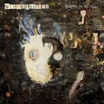

Music Reviews
-
The Cave Singers Naomi
Does average mean good or bad? The Cave Singers' latest album is uninspired but not unlistenable.
John Grimley uses a lot of adjectives for average... -

Josh Rouse The Happiness Waltz
The Nebraskan singer-songwriter's tenth release harks back to the mellow 70s grooves Rouse explored on albums such as 1972 and Nashville.
Angel Aguilar reviews... -

Josh Ritter The Beast in its Tracks
The Idaho singer-songwriter's latest vividly recounts the emotional turmoil of his breakup with ex-wife Dawn Landes, illustrating the confusion that arises between bidding farewell and welcoming a new commitment.
Juan Edgardo Rodríguez hopes it never comes to this... -

Stereophonics Graffiti On The Train
Stereophonics come back with their first release in 4 years, and their first since the tragic death of Stuart Cable. Can Kelly and co. shake off the 'meat and potatoes' tag?
Carl Purvis reviews... -
Rhye Woman
Duo Rhye drew a considerable amount of attention last year, thanks to both a couple of terrific singles and a unintentional sense of mystique. Now that they've provided us with a more substantial view of themselves, will they be able to hold onto it?
Mark Davison basks in audio sunshine... -
Johnny Marr The Messenger
If you're a die-hard Smiths fan, you now have something new to do.
Forrest Cardamenis is... -
Youth Lagoon Wondrous Bughouse
Trading in the cozy, homespun atmosphere of his debut for something much bigger and brighter, Youth Lagoon's latest is a stunning, eerie, and bizarre universe that only could only come from the warped imagination of the youthful.
Peter Quinton tries not to mention any hallucinogens... -

Foals Holy Fire
Foals' watered down take on arena pop fails to shine through like their earlier releases.
Carlos Villareal reviews... -
Atoms for Peace Amok
The debut record from the Atoms for Peace supergroup may sound more like a Thom Yorke solo record on first listen, but repeated hearings prove that as long as the music is good, the questions and details about its origin will fall to the wayside.
Joe Marvilli is looking forward to the next Thom Yorke and Flea dance-off... -
Palma Violets 180
A hyped British band with an album that's going to save guitar music? Have we been here before?
David Coleman has a sense of déjà vu...